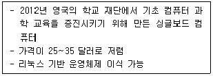
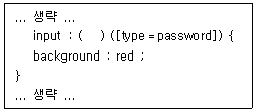
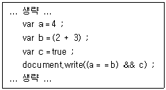
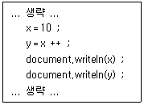
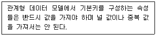

멀티미디어콘텐츠제작전문가 (2020-06-06 기출문제)
1과목: 멀티미디어개론
1. 뉴욕타임즈 같은 언론사나 야후 같은 유명 사이트와 제휴를 해서 트위터 사이트로 이동하지 않고도 해당 사이트상에서 최근의 트위터 글을 바로 확인할 수 있는 새로운 플랫폼은?
- @anywhere
- Sandbox
- Netflix
- Podcast
(정답률: 90%)

2. IP 논리 주소를 MAC 물리 주소로 변환시켜주는 프로토콜은?
- FTP
- ARP
- SMTP
- UDP
(정답률: 69%)
3. 영국 오디오 프로세싱 테크놀로지 사에서 개발하였고, MP3보다 연산량이 적어 전력이 적게 소비되며, 압축 효율이 높아 CD와 같은 음질을 제공하는 오디오 코덱은?
- AC3
- XVID
- DTS
- aptX
(정답률: 64%)
4. 다음이 설명하는 것은?

- 비글
- 라즈베리파이
- 비틀즈
- NEC
(정답률: 87%)
5. 연속적인 아날로그 신호를 PAM 신호로 바꾸는 과정 에서 발생되는 오차는?
- 절단 오차
- 시그널 오차
- 반올림 오차
- 엘리어싱 오차
(정답률: 58%)
6. 시스템에 침입한 해커가 다시 침입을 쉽게 하기 위해 만들어 놓은 불법 출입 기능을 무엇이라고 하는가?
- 방화벽
- 스파이웨어
- 백도어
- 크래킹
(정답률: 87%)
7. 인터넷 제어 메시지 프로토콜(ICMP)에 대한 설명으로 틀린 것은?
- IP 프로토콜의 약점을 보완하기 위해 설계
- 응용 계층 프로토콜
- ICMP 메시지 형식은 8바이트의 헤더와 가변길이의 데이터 영역으로 분리
- ICMP 메시지는 하위 계층으로 가기 전에 IP 프로토콜 데이터그램 내에 캡슐화
(정답률: 62%)
8. TCP/IP의 전송계층에서 비연결 지향 파일 전송으로 신뢰할 수 없는 통신서비스를 제공하는 프로토콜은?
- ATP
- TCP
- UDP
- HTTP
(정답률: 73%)
9. 44.1kHz로 샘플링한 CD의 경우 이론적으로 재생할 수 있는 최대 주파수에 가장 근접한 주파수(kHz)는?
- 22
- 13
- 10
- 5
(정답률: 82%)
10. 음성을 7비트에서 8비트로 양자화로 부호화했을 때 설명으로 틀린 것은?
- 표본화 잡음이 반으로 감소된다.
- 압축 특성이 개선된다.
- 양자화 잡음이 감소한다.
- 신장 특성이 개선된다.
(정답률: 61%)
11. 프로세스들 간의 메모리 경쟁으로 인하여 지나치게 페이지폴트가 발생하여 전체 시스템의 성능이 저하되는 현상은?
- Sharing
- Patch
- Thrashing
- Locality
(정답률: 84%)
12. 빈트 서프가 '잊힌 세기'를 대비하기 위해 고안한 대안적 기술로 모든 콘텐츠 포맷과 소프트웨어, 하드웨어를 담을 수 있는 '저장 그릇'을 일컫는 용어는?
- 디지털 양피지
- 캡차
- 딥러닝
- 디지털 프라이버시
(정답률: 82%)
13. FTP 취약점을 이용하는 공격방법으로 FTP 바운스 공격을 이용하여 어느 지점에서 보내는지 인지할 수 없도록 전자메일을 보내는 공격방법은?
- Bomb Mail
- Fack Mail
- Spam Mail
- Group Mail
(정답률: 73%)
14. 암호화 시스템의 핵심 요소로 거리가 먼 것은?
- 키
- 횟수
- 알고리즘
- 키의 길이
(정답률: 69%)
15. 정보 보호를 통해 달성하려고 하는 목표로 거리가 먼 것은?
- 비밀성
- 무결성
- 책임성
- 가용성
(정답률: 75%)
16. 영상압축의 표준화 방식은?
- Dolby AC－3
- H.264
- MPEG1 audio/layer3
- MUSICAM
(정답률: 92%)
17. 파형 코딩 방법 중 연속된 샘플의 값들 사이의 차이만을 인코딩하고 저장함으로써 압축을 하는 방식으로 ITU-T의 음성 압축 표준인 G.72X의 핵심 코딩 기술은?
- PM
- PCM
- AM
- ADPCM
(정답률: 62%)
18. 네트워크상의 데이터를 도청하는 행위를 무엇이라고 하는가?
- Pushing
- Sniffing
- Cracking
- Phishing
(정답률: 82%)
19. 리눅스에서 프로세스를 복제하는 기능의 함수는?
- Create
- Fork
- Exec
- Memcopy
(정답률: 73%)
20. 리눅스에서 파일의 권한 설정을 변경할 때 사용하는 명령어는?
- su
- chown
- chgrp
- chmod
(정답률: 74%)
2과목: 멀티미디어기획및디자인
21. 타이포그래피와 레터링에 대한 설명 중 거리가 가장 먼 것은?
- 타이포그래피란 활자 혹은 활판에 의한 인쇄술을 가리켜 왔지만, 오늘날에는 주로 글자를 구성하는 디자인을 일컬어 타이포그래피라고 한다.
- 레터링을 할 때 가장 중요한 것은 독창성을 강조하는 것이다.
- 활자의 크기는 포인트(Point)라는 단위를 사용한다.
- 레터링은 넓은 뜻으로는 글자 디자인, 글자 표현, 그 기능이나 글자 자체를 의미한다.
(정답률: 76%)
22. 원자극을 제거해도 보고 있던 상의 자극이 잠시 지속되는 현상은?
- 동시 대비
- 동화 현상
- 정의 잔상
- 부의 잔상
(정답률: 78%)
23. 멀티미디어 디자인의 구성요소 중 텍스트에 관한 설명으로 옳은 것은?
- 멀티미디어 타이틀에서 텍스트는 정적인 텍스트만을 사용한다.
- 텍스트의 서체에서 세리프(Serif)는 문자의 끝부분에 삐침이 없는 서체를 말한다.
- 글자 크기 1포인트(Point)는 72분의 1인치(Inch)를 나타낸다.
- 비트맵(Bitmap) 폰트는 트루타입(True－type) 폰트라고도 하며, 문자의 윤곽선을 수학적인 함수로 표현한다.
(정답률: 70%)
24. 색 삼각형의 연속된 선상에 위치한 색들을 조합 하면 관련된 시각적 요소가 포함되어 있기 때문에 서로 조화한다는 원리는?
- 루드의 색채조화론
- 이텐의 색채조화론
- 문-스펜서의 색채조화론
- 비렌의 색채조화론
(정답률: 70%)
25. 신문 광고와 비교하여 잡지 광고가 가지는 특성으로 가장 적절한 것은?
- 자료보관이 어렵고 회람률이 낮다.
- 매일 매일의 시리즈 광고에 적합하다.
- 관심분야에 따른 독자층을 선택할 수 있다.
- 구독률이 매우 높아 광고의 안정성이 높다.
(정답률: 85%)
26. 멀티미디어 디자인의 요소 중 시각적 요소의 상호 작용에 의해 방향감, 공간감, 위치감, 중량감의 변화를 느낄 수 있는 요소는?
- 개념요소
- 시각요소
- 상관요소
- 실제요소
(정답률: 52%)
27. 유행성을 설명하는 용어로 경향이나 동향, 추세 또는 단기간 지속되는 변화나 현상을 의미하는 것은?
- 트렌드(Trend)
- 세그먼트(Segment)
- 크레이즈(Craze)
- 마케팅(Marketing)
(정답률: 90%)
28. 소비자 구매 과정을 바르게 나열한 것은?
- 주의 → 흥미 → 욕망 → 기억 → 행동
- 흥미 → 욕망 → 기억 → 행동 → 주의
- 주의 → 욕망 → 기억 → 흥미 → 행동
- 욕망 → 흥미 → 행동 → 주의 → 기억
(정답률: 86%)
29. 때때로 사물을 사실과 다르게 지각하는 것을 무엇 이라고 하는가?
- 착시
- 점이
- 변화
- 균형
(정답률: 87%)
30. 헤링의 4원색설을 기준으로 하는 색체계는?
- 먼셀의 색체계
- 뉴턴의 색체계
- 비렌의 색체계
- 오스트발트의 색체계
(정답률: 67%)
31. 포장디자인에 나타나는 시각적 요소(Visual Element)가 아닌 것은?
- Color
- Layout
- Concept
- Typography
(정답률: 58%)
32. 섬네일 스케치(Thumbnail Sketch)에 대한 설명으로 옳은 것은?
- 표현대상의 특징과 성질 등을 사진처럼 세밀하게 그리는 스케치
- 아이디어를 간략하고 신속하게 그리는 과정으로 전체의 구상이나 이미지를 포착하기 위하여 프리핸드(Free hand)로 그리는 스케치
- 최종 결과물을 보여주는 자세한 스케치
- 형상, 재질, 패턴, 색채 등을 정확하게 그리는 스케치
(정답률: 86%)
33. 포스터 디자인에 관한 설명으로 틀린 것은?
- 선전이나 광고매체라고도 한다.
- 영상 이미지가 가장 중요한 표현 요소이다.
- 일정한 지면 위에 그림, 사진, 문안 등을 통하여 한눈에 볼 수 있도록 메시지를 전달한다.
- 포스터라는 명칭은 원래 기둥이나 벽보를 의미한다.
(정답률: 89%)
34. 평면 디자인과 입체 디자인에서 모두 볼 수 있는 개념요소의 종류로 옳은 것은?
- 점, 선, 면, 양감
- 깊이, 너비, 길이
- 꼭지점, 모서리, 면
- 수평면, 수직면, 측면
(정답률: 71%)
35. 사용자 인터페이스 디자인을 위한 조형 원리에 해당되지 않는 것은?
- 통일감과 조화
- 강조
- 균형
- 분류
(정답률: 66%)
36. 컴퓨터그래픽스의 기본개념인 픽셀(Pixel)애 대한 설명으로 거리가 먼 것은?
- 일반적으로 픽셀의 종횡비는 1.45 : 1 이다.
- 픽셀이란 디지털 이미지의 최소단위를 말하는 것으로 'Picture'와 'Element'의 두 단어의 결합에서 생겨났다.
- 픽셀의 집약 해상도(Intensity Resolution)는 각 픽셀에서 저장된 비트맵의 수이다.
- 각 픽셀은 각각의 위치 값을 가진다.
(정답률: 70%)
37. 디자인의 요소 중 물체 표면이 가지고 있는 특징의 차이를 시각과 촉각을 통하여 느낄 수 있는 것은?
- 색체
- 양감
- 공간감
- 질감
(정답률: 83%)
38. 문-스펜서 조화론에서 분류하는 조화가 아닌 것은?
- 동일 조화
- 이색 조화
- 유사 조화
- 대비 조화
(정답률: 75%)
39. 색체 체계에 대한 설명이 옳게 표현된 것은?
- RGB－Red, Green, Black
- RGB－Red, Green, Blue
- CMYK－Cyan, Marin, Yellow, Black
- CMYK－Chrome, Magenta, Yellow, Blue
(정답률: 89%)
40. 자연에서 흔히 접할 수 있는 노을 지는 하늘과 같은 배색에서 얻어지는 조화의 원리는?
- 친근감의 원리
- 질서의 원리
- 명료의 원리
- 대비의 원리
(정답률: 74%)
3과목: 멀티미디어저작
41. HTML5에서 Type 속성이 Password가 아닐 경우 백그라운드 속성에 Red 값을 적용하기 위해 ( ) 안에 들어갈 코드로 옳은 것은?

- equal
- not
- false
- true
(정답률: 60%)
42. 다음 중 조인(Join) 처리방법이 아닌 것은?
- Sord－Merge 조인
- Hash 조인
- Nested－Loop 조인
- Cartesian Loop 조인
(정답률: 53%)
43. 자바스크립트에서 사용하는 특수 문자가 아닌 것은?
- ＼n
- ＼t
- ＼s
- ＼f
(정답률: 62%)
44. 자바스크립트의 브라우저 내장 객체 중 독립적으로 사용되며, 브라우저의 종류, 사용 언어, 시스템 종류 등의 정보를 제공하는 객체는?
- Navigator 객체
- Window 객체
- History 객체
- Location 객체
(정답률: 61%)
45. 릴레이션의 카디널리티(Cardinality)란?
- 디그리 또는 차수라고 한다.
- 릴레이션에 포함되어 있는 튜플의 수이다.
- 릴레이션에 포함되어 있는 애트리뷰트의 수이다.
- ＜애트리뷰트 이름, 값＞을 갖는 쌍의 집합이다.
(정답률: 59%)
46. HTML5에서 캔버스에 이미지를 추가할 때 사용하는 메서드는?
- drawImage
- createImage
- beginPoint
- stroke
(정답률: 67%)
47. 데이터베이스의 물리적 설계 단계와 거리가 먼 것은?
- 저장 레코드 양식 설계
- 레코드 집중의 분석 및 설계
- 트랜잭션 인터페이스 설계
- 접근 경로 설계
(정답률: 53%)
48. 자바스크립트 코드의 실행 결과로 옳은 것은?

- a==b && c
- false
- 4==5 && false
- true
(정답률: 74%)
49. HTML5에서 동일 사이트 내 문서나 다른 사이트의 문서로 연결하는 링크를 정의하는 태그는?
- ＜nav＞
- ＜area＞
- ＜fieldset＞
- ＜hgroup＞
(정답률: 80%)
50. 릴레이션에 있는 모든 튜플에 대해 유일성은 만족시키지만 최소성은 만족시키지 못하는 키는?
- 후보키
- 슈퍼키
- 공유키
- 외래키
(정답률: 68%)
51. DBMS의 필수 기능으로 거리가 먼 것은?
- 정의
- 저장
- 조작
- 제어
(정답률: 68%)
52. Commit 과 Rollback 명령어에 의해 보장 받는 트랜잭션의 특성은?
- 원자성
- 병행성
- 보안성
- 로그
(정답률: 67%)
53. 속성들로 기술된 개체 타입과 이 개체 타입들 간의 관계를 이용하여 전체 논리 구조를 나타내며, 실세계의 의미와 상호 작용을 추상적 개념으로 표현하는 데이터 모델은?
- Tree Data Model
- Software Data Model
- Mesh Data Model
- Entity－Relationship Model
(정답률: 68%)
54. 관계 데이터베이스에서 뷰(View)를 사용하는 장점으로 거리가 먼 것은?
- 데이터 독립성
- 보안 강화
- 성능 향상
- 복잡한 테이블의 단순 접근
(정답률: 52%)
55. HTML5에서 컨트롤의 값을 텍스트에서 숫자 형식으로 변환해 주는 함수는?
- stringNumber( )
- textNumber( )
- valueAsNumber( )
- textAsNumber( )
(정답률: 66%)
56. DBMS에서 릴레이션, 애트리뷰트, 인덱스, 데이터베이스 사용자 등에 관한 정보가 저장되는 곳은?
- 데이터사전
- 트랜잭션
- ER다이어그램
- 응용프로그램
(정답률: 58%)
57. 자바스크립트에서 다음과 같은 연산을 수행한 결과는?

- x＝10, y＝10
- x＝10, y＝11
- x＝11, y＝10
- x＝11, y＝11
(정답률: 57%)
58. 다음이 설명하는 내용은?

- 널 무결성
- 필드 무결성
- 개체 무결성
- 자료 무결성
(정답률: 75%)
59. 다음 SQL 명령 중 DML에 해당하지 않는 것은?
- SELECT
- ALTER
- DELETE
- UPDATE
(정답률: 59%)
60. CSS3는 HTML 요소의 크기, 색상, 정렬 등을 나타내는 다양한 단위를 사용한다. 이 가운데 키워드로 제공되며 크기를 나타내는 단위로 배수 단위를 표현하는 것은?
- %
- em
- inch
- px
(정답률: 58%)
4과목: 멀티미디어제작기술
61. Aldus와 MicroSoft 가 공동 개발한 래스터 화상 파일 형식은?
- GIF
- TIFF
- PICT
- DWG
(정답률: 62%)
62. 월트디즈니사에서 제작한 '미녀와 야수' 애니메이션은 움직임을 최대한 자연스럽게 표현하기 위한 풀 애니메이션 방식으로 제작되었다. 이와 같은 애니메이션을 3초 분량으로 만들려면 몇 프레임이 필요한가?
- 47
- 72
- 90
- 112
(정답률: 69%)
63. CD의 표준 샘플링 주파수와 양자화 비트수는?
- 44.1kHz, 16bit
- 46.1kHz, 32bit
- 48.2kHz, 32bit
- 49kHz, 16bit
(정답률: 75%)
64. 애니메이션 제작 용어에 대한 설명으로 틀린 것은?
- 트위닝(Tweening) : 키프레임 사이에서 움직임이나 변형의 종류를 채우면서 애니메이션을 만드는 것
- 모핑(Morphing) : 2차원에서만 사용되는 기법으로 사물의 형상이 다른 형상으로 서서히 변하는 모습을 보여주는 과정
- 로토스코핑(Rotoscoping) : 실제 장면을 촬영한 동영상과 애니메이션 이미지를 합성하는 기법
- 입자 시스템(Particle System) : 비, 불, 연기, 폭발 등의 특수 효과를 내기 위해 사용하는 기법
(정답률: 66%)
65. 비디오 압축 기술 중 MPEG－2 방식 설명으로 틀린 것은?
- 목표 전송률은 1.5 Mbits/sec 이하이다.
- 표준을 따르는 MPEG－2 디코더는 MPEG－1 스트림도 재생할 수 있다.
- HDTV 전송의 표준을 포함하고 있다.
- 순차주사(Noninterlace) 방식과 격행주사(Interlace) 방식 모두를 지원한다.
(정답률: 68%)
66. 3D 애니메이션의 작업 중 어떠한 대상물을 크기만 변경하여 통일된 형태를 가진 복제물, 즉 3차원 객체에 사진이나 그림 등의 2차원적 화상을 입히어 질감이나 재질을 표현하는 과정은?
- 모델링(Modeling)
- 모핑(Morphing)
- 매핑(Mapping)
- 셰이딩(Shading)
(정답률: 71%)
67. 다음 중 오디오 파일의 확장자 명이 아닌 것은?
- SND
- AIF
- MP3
(정답률: 87%)
68. 빛은 그 파장의 차이에 따라 굴절률이 각각 다른데 프리즘을 투과한 빛이 각각의 굴절각의 차이로 여러 가지 색으로 나누어지는 현상은?
- 간섭
- 편광
- 회절
- 분산
(정답률: 67%)
69. 영상 촬영 시 뒤에서 비추는 빛으로 실루엣(Silhouette) 효과를 만들기 위해 이용하는 조명은?
- 순광(Front Light)
- 사광(Side Light)
- 역광(Back Light)
- 키라이트(Key Light)
(정답률: 85%)
70. 이미지 필터링에 대한 내용으로 틀린 것은?
- 필터링이란 기본 이미지에 임의의 변환을 가하여 특수한 효과를 얻는 것을 말한다.
- 필터링을 사용하면 잡음이나 왜곡으로 인해 변형된 이미지를 원래의 품질로 복원시킬 수도 있다.
- 윤곽선 추출 필터를 적용하면 주위의 픽셀 값과 섞여서 잡음이 감소되는 효과를 볼 수 있다.
- 평균값 필터는 이미지의 각 픽셀에서 일정한 주위의 픽셀 값을 평균치를 구하며 현재 픽셀 값을 대체시키는 필터이다.
(정답률: 50%)
71. NTSC 컬러 TV 방식의 동기 신호 중 수평과 수직 주사 주파수에 가장 가까운 것은?
- 수평주파수: 15.73426kHz, 수직주파수: 59.94kHz
- 수평주파수: 16.73426kHz, 수직주파수: 58.94kHz
- 수평주파수: 17.73426kHz, 수직주파수: 57.94kHz
- 수평주파수: 18.73426kHz, 수직주파수: 56.94kHz
(정답률: 65%)
72. 버퍼에 잠깐 머물러 있다가 바로 화면에 띄워져 대용량의 멀티미디어 정보를 전송하는데 유용한 것은?
- 하이퍼텍스트
- 하이퍼미디어
- 온 디멘드
- 스트리밍 기술
(정답률: 70%)
73. 벡터(Vector) 기반 드로잉 소프트웨어로만 나열된 것은?
- 파이널 컷 프로, 코렐드로우
- 파이어웍스, 포토샵
- 파이어웍스, 프리미어
- 코렐드로우, 일러스트레이터
(정답률: 82%)
74. 셀 애니메이션에서 사용되는 기법으로 팔을 흔드는 동작과 같이 캐릭터의 동작이 정해져 있을 경우, 캐릭터의 몸 전체를 매번 그리지 않고 분리되어 있는 팔만 다시 그려서 합성하는 기법은?
- 양파껍질 효과(Onion－Skinning)
- 가감속(Ease－Out / Ease－in)
- 반복(Cycling)
- 도려내기(Cut－Out)
(정답률: 78%)
75. 증강현실(Augmented Reality)의 상황을 설명하는 것은?
- 전자상거래 시스템과 연결하여 온라인 쇼핑을 한다.
- 3D로 제작된 모델 하우스에서 벽지를 골라 인테리어 한다.
- 구글 글래스(Google Glass)와 같은 안경을 쓰고 거리를 걸으면서 교통표지판을 번역하여 본다.
- 도로에서 실제 운전하기 전에 실내 운전 연습 시뮬레이터로 주행 연습을 한다.
(정답률: 79%)
76. 3차원의 기하학적 형상 모델링으로 거리가 가장 먼 것은?
- 시스템 모델링
- 와이어 프레임 모델링
- 서피스 모델링
- 솔리드 모델링
(정답률: 69%)
77. 아날로그 사운드를 디지털화 할 때 원음을 그대로 반영하기 위해 원음이 가지는 최고 주파수의 2배 이상 으로 표본화 하는 것을 무엇이라 하는가?
- 나이키스트 정리
- 마스킹 효과
- 스칼라 양자화
- 서라운드 사운드 방법
(정답률: 57%)
78. 오디오 믹서의 기능 중 갑작스런 과부하 입력에 대한 왜곡을 제한시키기 위해 이용하는 것은?
- 동기 신호 발생기
- 리미터
- 저역 소거 필터
- 윈드 스크린
(정답률: 80%)
79. DVD(Digital Video Disk)에서 적용되는 음성 및 영상 압축 방식이 올바르게 짝 지워진 것은?
- AC－3 : MPEG－2
- MP3 : AVI
- QCELP : MPEG－4
- EVRC : JPEG
(정답률: 68%)
80. 멀티미디어의 비디오 소스에 저장된 프로그램을 사용자가 선택하여 시청할 수 있는 멀티미디어 서비스는?
- 전자 상거래 서비스
- 화상 회의 서비스
- 위치 기반 서비스
- 주문형 비디오 서비스
(정답률: 83%)